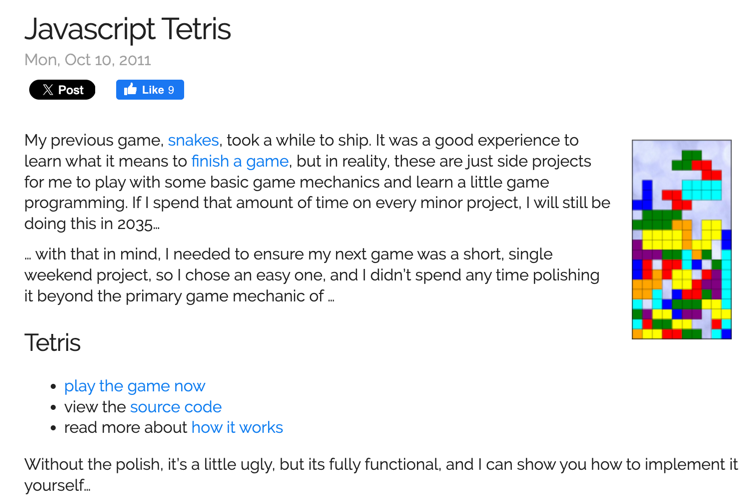
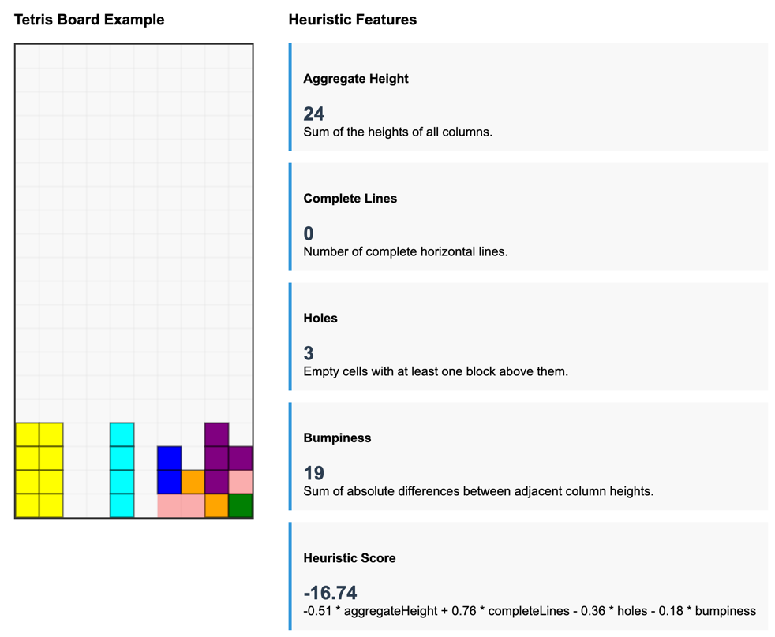

🎮 Every Programmer Should Write Tetris! 🚀
JavaScript, Beam Search and Python w/ AI
Alex Avdiushenko
July, 2025
Step 1: Look for some implementation of Tetris on the Inrenet
Source: Javascript Tetris, how it works
Features for Heuristic Agent
Heuristic Agent
Combine features into a heuristic score:
(-0.51 * aggHeight + 0.76 * completeLines - 0.36 * holes - 0.18 * bumpiness) $\to\max$
The first result
Fixed bug in Possible Moves
Fixed Height calculation, including null-bug
Heuristic Agent Results
(-0.51 * aggHeight + 0.76 * completeLines - 0.36 * holes - 0.18 * bumpiness) $\to\max$
| Case | Rows | Score |
|---|---|---|
| Heuristic with bugs | 0 | 222 |
| Fixed Possible Moves | 5 | 1 036 |
| Fixed Heigh calculation | 612 | 78 268 |
Ok, looks good, but what about Beam Search?
What is Beam Search?
- An approximate search algorithm commonly used in Natural Language Processing (NLP) tasks like machine translation and speech recognition
- It is a variation of greedy search that explores multiple paths simultaneously, keeping track of the $k$ most promising paths at each step
- Beam search striking a compromise between the efficiency of greedy search and the optimality of exhaustive search
Full Search based on the next piece
Heuristic Agent Results
(-0.51 * aggHeight + 0.76 * completeLines - 0.36 * holes - 0.18 * bumpiness) $\to\max$
| Case | Rows | Score |
|---|---|---|
| Heuristic with bugs | 0 | 222 |
| Fixed Possible Moves | 5 | 1 036 |
| Fixed Heigh calculation | 612 | 78 268 |
| Full Search w\ Next Piece | 44 301 | 5 623 130 |
Time to rewrite it in Python!
Trust Junie to do the hard work:
Prompt 1: Look at the javascript tetris project and come up with the plan of rewriting it in Python. Write all the details in the `python-tetris/plan.md` file.
Prompt 2: Implement the tetris in Python according to the `python-tetris/plan.md`, but replace the `texture.jpg` background to the simple gray grid.
Prompt 3 (fixing bug): The game in Python works, but there is no AI mode, only flag for it.
It took about 30 min to get
Possible Future Steps
- Fix Python implementation!
- Join our programs at NUP or CUB 😎
- Rewrite Tetris in C++ or Kotlin
- Implement true Beam Search or MCTS
- Switch to other game 🙂